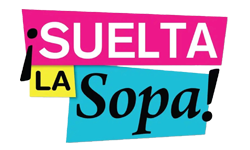
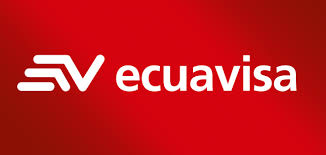
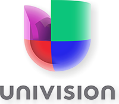
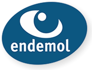
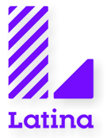
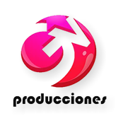
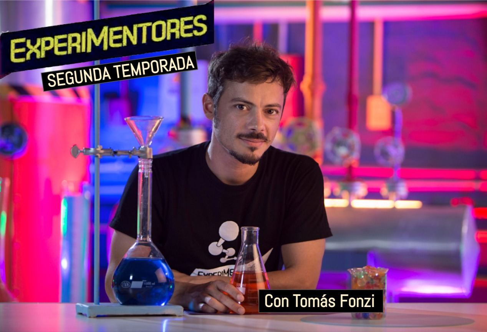
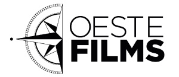
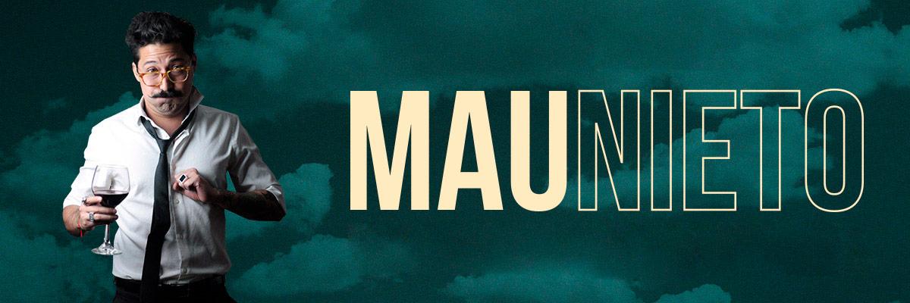

Consultoría.
Consultoría artística y de producción
-
Tigo Sports
Consultoría 360 del canal.
Procesos de producción / Eficiencia / Contenidos y programación.
2019 / 2020 -

Suelta la Sopa
Consultoría de contenidos.
360Powwow / Telemundo.
2020 -

Prueba de Amor
Consultoría de formato.
Coproducción Ecuavisa / Mediapro US.
2019 -

Univision
Consultoría para la presidencia de Entretenimientos con incidencia directa en Despierta América y El Gordo y La Flaca.
2016 / 2017 -
Cocineros Mexicanos
Consultoría de formato.
TV Azteca, México.
2017 -

Gran Hermano
Consultoría de formato.
City TV, Colombia.
2012 -

Latina
Consultoría en gestión de programación, contenidos y procesos de producción.
Perú.
2012 -

Productora
Descripción a confirmar.
Perspectiva de género y diversidad
Capacitación y consultoría de contenidos con perspectiva de género y diversidad.
Directora: Silvina Acosta
Curaduría
Curaduría de perspectiva de género en guiones y contenidos.
La curaduría tiene como objetivo trabajar junto con el equipo autoral y la producción en la revisión de guiones para aplicar la perspectiva de género y el respeto por la diversidad.
Capacitación
Capacitación y training para autores/as, directores/as y productores/as.
El taller de capacitación para guionistas, directores/as y productores/as consiste en tres encuentros presenciales o virtuales para brindar herramientas teóricas y prácticas sobre perspectiva de género para sus contenidos.
Proyectos
La Hora Exacta

Experimentores 2

Oeste Films

Mau Nieto